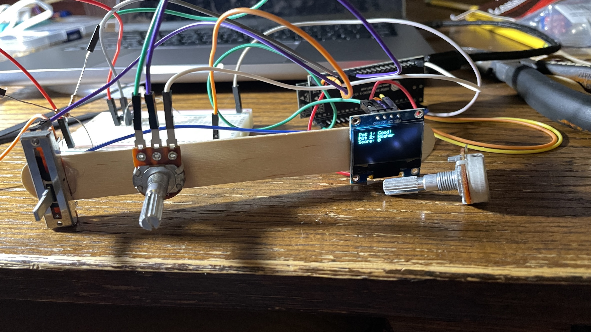

Electronic Output
This week I created a little game using potentiometers and an OLED screen.
Design Process
I wanted to create a game around guessing the correct position of a potentiometer. I used a OLED screen as a game interface and I think it turned out pretty fun.
Electronics
The electronics for this build were quite simple. Just 2 potentiometers hooked up to an ESP32 (through a resistor), a button that was also connected the ESP, then an OLED screen that connected through 4 ports to the ESP32. This was a little complicated to get the pins right but after a little trial and error I was able to get it working.
Code
The hardest part for this project was the code.
/**************************************************************************
This is an example for our Monochrome OLEDs based on SSD1306 drivers
Pick one up today in the adafruit shop!
------> http://www.adafruit.com/category/63_98
This example is for a 128x64 pixel display using I2C to communicate
3 pins are required to interface (two I2C and one reset).
Adafruit invests time and resources providing this open
source code, please support Adafruit and open-source
hardware by purchasing products from Adafruit!
Written by Limor Fried/Ladyada for Adafruit Industries,
with contributions from the open source community.
BSD license, check license.txt for more information
All text above, and the splash screen below must be
included in any redistribution.
**************************************************************************/
#include
#include
#include
#include
#define SCREEN_WIDTH 128 // OLED display width, in pixels
#define SCREEN_HEIGHT 64 // OLED display height, in pixels
// Declaration for an SSD1306 display connected to I2C (SDA, SCL pins)
// The pins for I2C are defined by the Wire-library.
// On an arduino UNO: A4(SDA), A5(SCL)
// On an arduino MEGA 2560: 20(SDA), 21(SCL)
// On an arduino LEONARDO: 2(SDA), 3(SCL), ...
#define OLED_RESET -1 // Reset pin # (or -1 if sharing Arduino reset pin)
#define SCREEN_ADDRESS 0x3C ///< See datasheet for Address; 0x3D for 128x64, 0x3C for 128x32
#define NUMFLAKES 10 // Number of snowflakes in the animation example
#define LOGO_HEIGHT 16
#define LOGO_WIDTH 16
static const unsigned char PROGMEM logo_bmp[] =
{ 0b00000000, 0b11000000,
0b00000001, 0b11000000,
0b00000001, 0b11000000,
0b00000011, 0b11100000,
0b11110011, 0b11100000,
0b11111110, 0b11111000,
0b01111110, 0b11111111,
0b00110011, 0b10011111,
0b00011111, 0b11111100,
0b00001101, 0b01110000,
0b00011011, 0b10100000,
0b00111111, 0b11100000,
0b00111111, 0b11110000,
0b01111100, 0b11110000,
0b01110000, 0b01110000,
0b00000000, 0b00110000 };
#define I2C_SDA 19
#define I2C_SCL 20
TwoWire I2C_screen = TwoWire(0);
Adafruit_SSD1306 display(SCREEN_WIDTH, SCREEN_HEIGHT, &I2C_screen, OLED_RESET);
class potRand {
long targetNum;
int pin;
long minVal;
long maxVal;
long minOut;
long maxOut;
long tolorance;
long LastUpdate;
public:
potRand(int pin, long minVal, long maxVal, long minOut, long maxOut, long tolorance) {
this->pin = pin;
this->minVal = minVal;
this->maxVal = maxVal;
this->minOut = minOut;
this->maxOut = maxOut;
this->tolorance = tolorance;
LastUpdate = millis();
targetNum=random(minOut, maxOut);
}
long checkVal() {
long OrgValue = analogRead(pin);
long Value = map(OrgValue, minVal, maxVal, minOut, maxOut);
if((targetNum + tolorance > Value) && (targetNum - tolorance < Value)) {
return 0;
}
else {
return abs(targetNum-Value);
}
}
int getTargetNum() {
return targetNum;
}
int getCurrentNum() {
return map(analogRead(pin), minVal, maxVal, minOut, maxOut);
}
void resetTarget() {
targetNum=random(minOut, maxOut);
}
};
int buttonPin = 6;
potRand pot1(4, 0, 5120, 0, 50, 2);
potRand pot2(15, 0, 5120, 0, 50, 2);
long dTime = 0;
long score = 0;
void setup() {
Serial.begin(115200);
I2C_screen.begin(I2C_SDA, I2C_SCL, 100000);
// SSD1306_SWITCHCAPVCC = generate display voltage from 3.3V internally
if(!display.begin(SSD1306_SWITCHCAPVCC, SCREEN_ADDRESS)) {
Serial.println(F("SSD1306 allocation failed"));
for(;;); // Don't proceed, loop forever
}
// Show initial display buffer contents on the screen --
// the library initializes this with an Adafruit splash screen.
display.display();
delay(2000); // Pause for 2 seconds
// Clear the buffer
display.clearDisplay();
display.println(F("Press Button"));
display.display();
}
void loop() {
long currentT = millis();
display.setTextSize(1.5);
display.setTextColor(SSD1306_WHITE);
display.setCursor(0, 0);
if((analogRead(buttonPin) == 8191) && ((currentT-dTime)/1000 > 1)) {
display.clearDisplay();
int checkVal1 = pot1.checkVal();
int checkVal2 = pot2.checkVal();
if(((checkVal1 == 0) && (checkVal2 == 0))) {
display.println(F("You Got It!"));
pot1.resetTarget();
pot2.resetTarget();
score+=1;
display.println(F("Press Button"));
}
else if(checkVal1 == 0) {
display.println(F("Pot 1: Good!"));
if(pot2.getCurrentNum() - pot2.getTargetNum() > 0) {
display.println(F("Pot 2: Lower"));
}
else {
display.println(F("Pot 2: Higher"));
}
}
else if(checkVal2 == 0) {
if(pot1.getCurrentNum() - pot1.getTargetNum() > 0) {
display.println(F("Pot 1: Lower"));
}
else {
display.println(F("Pot 1: Higher"));
}
display.println(F("Pot 2: Good!"));
}
else {
if(pot1.getCurrentNum() - pot1.getTargetNum() > 0) {
display.println(F("Pot 1: Lower"));
}
else {
display.println(F("Pot 1: Higher"));
}
if(pot2.getCurrentNum() - pot2.getTargetNum() > 0) {
display.println(F("Pot 2: Lower"));
}
else {
display.println(F("Pot 2: Higher"));
}
}
dTime = currentT;
display.print(F("Score: "));
display.println(score);
}
Serial.print(pot2.getTargetNum());
Serial.print(" : ");
Serial.println(pot2.getCurrentNum());
Serial.print(pot1.getTargetNum());
Serial.print(" : ");
Serial.println(pot1.getCurrentNum());
display.display();
}
This code was based on Adafruit's example code for the OLED screen. I modified it so I could write text on the screen. I also used a class in the construction of this code for the potentiometers. This includes functions to get the current values of the potentiometer, mapping the values to more manageable intervals, getting a new random value, and getting the current target value. The rest of the loop code is for the game loop. The game works by telling you when you hit the button if the positions of the potentiometer are higher or lower. You can then change the potentiometer values and check if you got closer. Once you get one of the values it will tell you that its good. When you get both correct, your score will go up and then it will reset and you can play again.